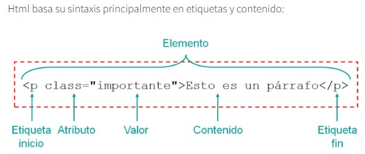

HTML (HYper Text Markup Language) es un markup language, lo que significa que está escrito con códigos que puede leer una persona sin que sea necesario compilarlo primero. En otras palabras, el texto en una página web está «marcado» con estos códigos para dar instrucciones al navegador web sobre cómo mostrar el texto. Estas etiquetas de marcado son las propias etiquetas HTML.
Cuando escribes código en HTML, estás escribiendo etiquetas HTML. Todas las etiquetas HTML están hechas con un número de partes específicas, incluyendo:

El hipertexto (HTML) es un lenguaje informático que forma la mayoría de las páginas web y plataformas online. HTML no se considera un lenguaje de programación, ya que no puede crear una funcionalidad dinámica. Sin embargo, los usuarios web pueden crear y estructurar secciones, párrafos y enlaces usando elementos, etiquetas y atributos.
La mayoría de páginas web tienen varias páginas HTML diferentes. Por ejemplo, una página de inicio, otra de producto, otra de contacto, etc. Cada una de estas tiene HTML separados. Los documentos HTML son archivos que acaban con .html o .htm. Un navegador lee el archivo y muestra su contenido para los internautas puedan verlo.
Como hemos comentado anteriormente, todas las páginas HTML contienen una serie de elementos HTML que a la vez disponen de diferentes etiquetas y atributos. Es decir, los elementos HTML son los componentes básicos de una página web. Una etiqueta contiene mucha información. Le indica al navegador dónde empieza y dónde termina cada elemento, mientras que un atributo describe las características.
Los elementos HTML suelen dividirse en tres partes. Esta combinación de las tres crea un elemento HTML.
Otra parte fundamental de un elemento HTML son los atributos. Estos tienen dos secciones:

Hay una serie de etiquetas que son las más usadas para crear cualquier documento HTML, a continuación las explicamos:
Indica la parte del cuerpo del contenido de un documento HTML. Es una etiqueta esencial para cualquier documento ya que indica donde empieza el contenido visible del documento.
La parte superior del documento HTML, es donde podremos indicar los metadatos: título del documento, hojas de estilos, javaScript, CSS…
Un elemento que es usado mayoritariamente para agrupar otros elementos y actuar como plantilla de otros controles. La etiqueta
Es una etiqueta que nos ayuda a poder crear un enlace a una página web. El atributo principal de la etiqueta HTML es href, donde pondremos el enlace al que queremos conectar. Otro atributo muy usado es target, el cual nos sirve para indicar si el enlace se abrirá en una nueva ventana o en la misma.
Ejemplo HTML:
aqui<a href=”https://www.nombredelaweb.com/” target=”_blank”>aquí</a> para visitar el dominio.
Si tienes mucho texto, es importante poder dar énfasis a una parte en concreto, con la etiqueta strong lo podemos hacer.
Con esta etiqueta HTML le podemos decir al navegador que viene un salto de línea. Nos sirve para hacer el texto más leíble.
Hay diferentes niveles de títulos, del 1 al 6. Las etiquetas
Usamos la etiqueta IMG para mostrar imágenes dentro del contenido. Necesita el atributo src para funcionar, ya que será donde indicaremos desde donde tiene que mostrar la imagen.
Las etiquetas OL y LI nos sirven para crear listas, OL para listas ordenadas y UL para listas sin orden. Dentro de las listas, los elementos se identifican con la etiqueta LI.
Etiqueta que nos sirve para agrupar texto dentro de un parágrafo. El propósito es poder hacer el contenido más fácil de leer y organizado.
Con la etiqueta podemos personalizar el estilo de solamente una parte del
Ejemplo HTML:
Solo <span style=”color: red;”>esta palabra</span> en rojo.